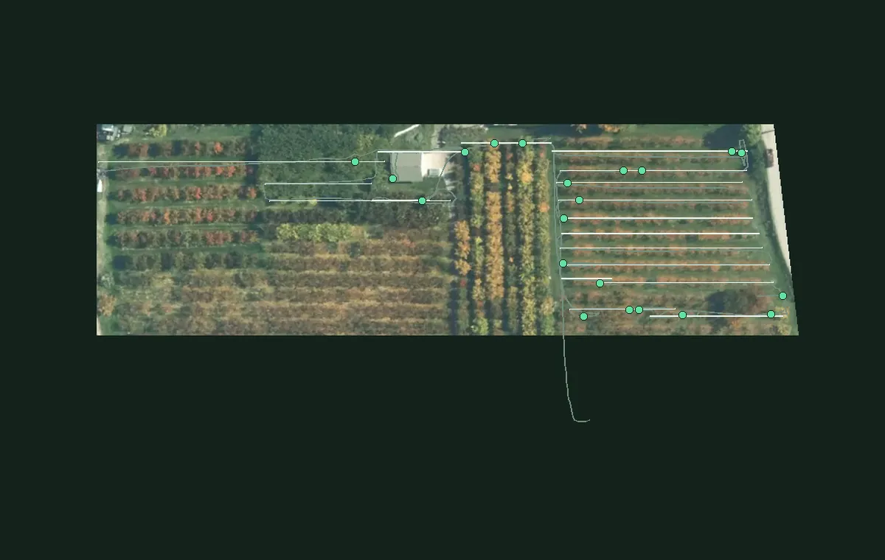

Public sample · grower identity and coordinates removed. The original grower report is unchanged.
Ground Scouting Report
Public sample
14
Rows scanned
913 m
Of row covered
21
Marked by operator
1.5
In-row marks per 100 m of row
Map/Overview
12 marked areas with photos from the source report
Each pin links an operator mark to its photo in the source report. Tap a pin or marked area to inspect it.
Filters
1Marked moundHeld areaPhoto

Where to look first
| Row | Marks | Per 100 m | |
|---|---|---|---|
| Row 07 | 2 | 7.7 | |
| Row 08 | 2 | 6.5 | |
| Row 04 | 2 | 3.7 | |
| Row 06 | 2 | 1.9 | |
| Row 02 | 2 | 1.4 |
Rows 07, 08 and 04 hold 6 of the 14 marks in the rows (43%). 7 more are off the rows (see the map).
About this report
- Operator marks
- Locations marked by the operator during a cart pass.
- Photos and boxes
- Photos and mound boxes are retained from the generated source report. They are not a measure of model accuracy.
- Coordinates removed
- The aerial photo is rotated and cropped to the scanned blocks. Grower details, exact dates and geographic coordinates have been removed. Imagery: Regional District of Central Okanagan, 2018 (OBWB, GeoBC). Contains information licensed under the Open Government License – Regional District of Central Okanagan. Row labels are anonymous. Row placement and distances are approximate.
- Leads, not proof
- Each mark is a spot to check on the ground, not a confirmed gopher or active burrow.